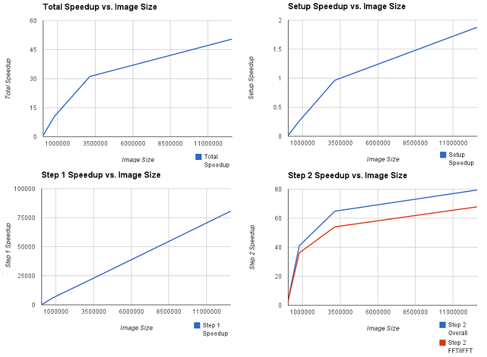

CS 205 Final Project
We were successful in achieving high speedups for the parallel implementation using PyCUDA. Benchmarks were obtained for various image sizes starting from 252 x 192 to 4096 x 3072 pixels. With each successive image, the width and height increase by a factor of 2. The number of iterations before convergence is predetermined for each image by lambda and kappa. With lambda = 0.02 and kappa = 2.0, we have 22 iterations for the "flowers" series of images.
The optimal kernel configuration was experimentally determined with the largest image
(4096 x 3072 pixels) to be (32, 16, 1) threads per block, meaning 32 in the x-direction
and 16 in the y-direction, and 256 total threads per block. A 2D thread configuration
instead of a linear one is more efficient because of better memory coalescing, leading to
optimizations during memory access. The total number of threads in the X and Y dimensions
are equal to the number of pixels in each dimension of the image, since each pixel requires
one thread. The grid dimensions can be computed with int(np.ceil(Nx * 1.0/x_tpb))
where x_tpb is the number of threads per block in the x direction, and the same is done for
the y dimension.
For total run time, image I/O is excluded from the measurements. All other setup and processing is included. Setup times assume that the program has already been run more than once, meaning that the main CUDA kernels and FFT plans are cached and do not need to be compiled.
Setup includes allocating memory on host (and device), computing the FFT of the original image, computing the OTF, and initializing the CUDA kernels and FFT plans on the parallel implementation.
For the serial performance, we found that the application time scaled roughly linearly with the number of pixels in the image. The run time ranges from less than 1 second for the smallest image to almost 6 minutes on the largest. Almost all of the run time in each of the steps was spent on computation. In the serial version, allocating all the needed buffers in setup took negligible time; the time was spent on computing the FFT of the original image and the OTF. As expected, the FFT and IFFT computations take the majority of the time of Step 2. Most of the computations in the the program are of O(N) complexity, while serial FFT algorithms usually run in O(N log N) time.
In the parallel implementation, interestingly, the majority of the setup time is spent on allocating and initializing the memory buffers on the GPU. For example, on the largest image with a setup time of ~4.3 seconds, ~3.9 seconds were spent on loading data onto and initializing buffers on the GPU. The CUDA kernels and FFT plans when cached initialize relatively fast.
The total run times for Step 1 were relatively constant for all image sizes. With even larger images, we would expect to see a roughly linear growth in run time with respect to pixel count, but currently performing the required computation on the input images is extremely fast. The majority of the recorded run time is most likely from communication between host and GPU.
We recorded a large increase in performance with the parallel version, with the largest image only taking around seven seconds to complete, corresponding to a speedup of about 50 times.
